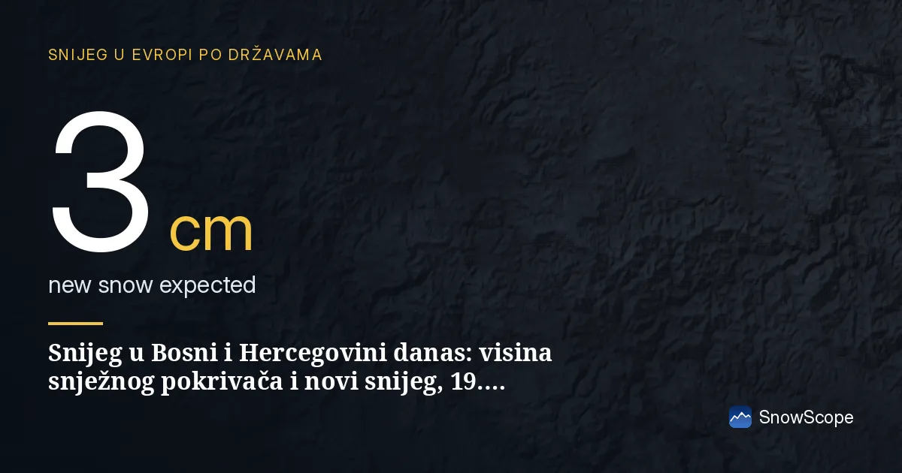

Snijeg u Bosni i Hercegovini danas: visina snježnog pokrivača i novi snijeg, 19. novembra 2026.
Planine Bosne i Hercegovine ostaju gole 19. studenog, ali se gradi značajan snježni sistem. Sljedeća nedlja mogla bi donijeti do 31 cm na najvišim padinama, sa četvrtkom 26. studenog kao prelomnom točkom sa 27 cm.
Pogledajte prognozu snijega za OC Bjelašnica ZOI '84 u aplikaciji SnowScopeVisina snijega, upozorenja i 3D karta, besplatno.
Kada stižu padavine
Samo 2 cm se očekuje u sljedeća tri dana na najsnježnijem terenu zemlje. Pravi preokret dolazi četvrtak 26. studenog, kada bi jedan sistem mogao donijeti 27 cm u najbližim zonama.
Nakon toga, dani 8 do 14 prognostičkog razdoblja pokazuju još 13 cm mogućnosti, raspoređujući akumulaciju kroz sljedeću nedolju. Prognoze toliko daleko u budućnosti mogu se promijeniti; provjerite kartu ponovno bliže datumu vašeg putovanja.
| Ski-centar | Visina snijega | Novi snijeg, 72 h | Naredni dani | Vrh |
|---|---|---|---|---|
| OC Bjelašnica ZOI '84 | 0 cm | 0 cm | 3 cm | 2.056 m |
| Jahorina olimpijski centar | 0 cm | 0 cm | 2 cm | 1.886 m |
| Kupres | 0 cm | 0 cm | 1 cm | 1.528 m |

Što visinski pojasevi pokazuju danas
Svi tri visinska pojasa ostaju bez snijega 19. studenog. Između 500 m i 1.000 m ima 0 cm; između 1.000 m i 1.500 m, također 0 cm; i iznad 1.500 m do 2.000 m, još uvijek 0 cm. Rano je u sezoni—snijeg koji dolazi sletjet će na golu zemlju i stijenu.
12 skijališta praćenih po Bosni i Hercegovini pokazuje 0 cm na svim mjestima. OC Bjelašnica ZOI '84, najviše skijališe u zemlji na 2.056 m, najvjerojatnije će prvo akumulirati kada sistem krene.
Kako se tjedan uspoređuje sa nedavnim danima
Posljednji dani su bili suhi. 16. studenog, 490 km² je bilo bijelo; do 17. studenog to se malo povećalo na 1.060 km², ali do 18. studenog je nestalo, a 19. studenog pokazuje ponovno 0 km².
Ovaj povlačenje je tipično ponašanje kasne jeseni kada suh zrak dominira. Dolazni sistem će označiti prelazak na vlažniji uzorak, pa gubici ne bi trebali nastaviti.
Planina po planina spremnost
OC Bjelašnica ZOI '84 se nalazi najviše na 2.056 m i uhvatit će prvu značajnu akumulaciju. Jahorina olimpijski centar na 1.886 m i Kupres na 1.528 m vidjet će snijeg stići nekoliko sati kasnije. Sva tri su prognozirana da prikupe između 1 i 3 cm u prvi tri dana, zatim mnogo više od četvrtka nadalje.
Rano-sezonski snijeg loše se hvata na golu stijenu i travu, pa kada padne, ostanite na pripremljenim pinama. Padine će biti tanke i flažnjave dok se drugom ili trećom sedmicom akumulacije ne gradi stabilna baza.
Susjedi i regionalna slika
Hrvatska na sjeverozapadu ostaje gola (0 % bijeli pokrivač) i prognozira se do 29 cm sljedeću sedmicu—slično Bosni i Hercegovini ali malo manje. Srbija na istoku pokazuje također 0 % bijeli pokrivač, sa manjom prognozom od samo 7 cm za sedmicu.
Bosna i Hercegovina sjedi između ova dva sistema, pa prognoza od 31 cm je stavlja na jačem kraju regionalnog uzorka.
Što to znači za vaš put
Ako planirate skijati u sljedeća dva ili tri dana, očekujte gole ili gotovo gole padine i loše prianjanje snijega na stijenama gdje ostaje staro pokrivanje. Čekajte do petka 27. studenog ili kasnije ako možete, kada će svježa akumulacija dati pinama stabilniju bazu.
Pakujte slojeve za brze vremenske promjene; sistem ovog razmjera obično donosi vjetar i hladnoću kao i snijeg. Pripremljene padine biti će najsigurnije do druge nedjelje prosinca, kada će prirodna akumulacija početi graditi pravu dubinu.
Savjeti za skijaše
- Odložite putovanje na 27. studenog ili kasnije ako je moguće; prvi 2–3 cm koji stignu prije četvrtka bit će tanki i flažnjavi preko stijene.
- Provjerite lokalnu lavinski bilten prije nego što napustite pripremljene padine. Vlažne labave lavine mogu nastati tijekom snježnih padavina, posebno na strmim padinama iznad 1.500 m.
- Rano-sezonski snijeg loše se hvata na golu zemlju. Skijajte pripremljene padine; terenu van pistaše biti nepoliće dok se baza ne zgusne.
- Iznad 1.500 m, grebeni izloženi vjetru mogu otkriti stijenu; budite oprezni i skijajte terenom koji dobro poznajete.
- Nosite bateriju i nepropusne slojeve. Četvrtakove teške padavine dobit će sa slabitkom vidljivosti i hladnim, vlažnim vremenskim uvjetima tipičnim za jesenskog orkana.
About these numbers
Resort snow depths are the deepest snow on the resort's upper slopes on the date shown; they are estimates for an area, not a measurement at one point. Forecasts can change. Always read the official avalanche bulletin before going off-piste.
Cite this report
For research, teaching or the press: the numbers and charts are free to reuse under CC BY 4.0 with this citation.
SnowScope (2026), Snijeg u Bosni i Hercegovini danas: visina snježnog pokrivača i novi snijeg, 19. novembra 2026., https://snowscope.app/blog/bs/2026/11/bosnia-and-herzegovina-snow-on-the-way-19-november-2026.html, accessed 2026-11-19
SnowScope (Atlas Labs). (2026, November 19). Snijeg u Bosni i Hercegovini danas: visina snježnog pokrivača i novi snijeg, 19. novembra 2026.. SnowScope snow reports. https://snowscope.app/blog/bs/2026/11/bosnia-and-herzegovina-snow-on-the-way-19-november-2026.html
BibTeX
@misc{snowscope2026bosniaandherzegovinasnow,
author = {{SnowScope (Atlas Labs)}},
title = {Snijeg u Bosni i Hercegovini danas: visina snježnog pokrivača i novi snijeg, 19. novembra 2026.},
year = {2026},
month = nov,
howpublished = {\url{https://snowscope.app/blog/bs/2026/11/bosnia-and-herzegovina-snow-on-the-way-19-november-2026.html}},
note = {Published 2026-11-19 13:38 UTC; accessed 2026-11-19}
}· CC BY 4.0 · Methods, data and tools →
OC Bjelašnica ZOI '84: snow and temperature by height, this winter vs last (tools) →
Follow OC Bjelašnica ZOI '84
Besplatno: poruka kada dolazi novi snijeg i prognoza svako jutro.